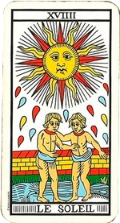
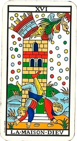
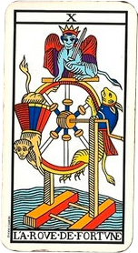
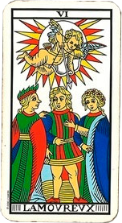

Habla con un tarotista ahora
ConsultarCartas Invertidas del Tarot: cómo interpretarlas
Redactor: Admin
Extiendes la tirada y una carta aparece del revés. Es uno de los momentos que más bloquea a quien está aprendiendo tarot, porque la duda es siempre la misma: ¿significa lo contrario? La respuesta corta es que casi nunca. En esta guía verás las cinco formas reales de interpretar una carta invertida, ejemplos concretos con arcanos mayores y los errores que conviene evitar.
QUÉ ES UNA CARTA INVERTIDA
Una carta invertida es simplemente la que aparece girada 180 grados respecto a quien hace la lectura. No es un arcano distinto, no es una carta nueva y no cambia su naturaleza: es el mismo símbolo con un matiz añadido.
La forma más útil de entenderlo es esta: la carta derecha muestra su energía fluyendo con normalidad; la carta invertida muestra esa misma energía alterada. Bloqueada, retenida, desviada hacia dentro o desbordada. Pero sigue siendo su energía.
Si El Sol habla de claridad y alegría, invertido no se convierte de golpe en tristeza: habla de una claridad que está tapada, retrasada o que aún no te permites disfrutar. El tema sigue siendo la luz.
¿HAY QUE LEERLAS? LAS DOS ESCUELAS
Conviene saberlo desde el principio: no existe una única respuesta correcta, y ambas posturas son perfectamente legítimas.
La escuela que sí las lee. Considera que las inversiones duplican la riqueza de la baraja y aportan precisión: permiten distinguir entre una cualidad presente y una cualidad bloqueada sin depender del resto de la tirada. Es la opción más habitual en lecturas de tipo terapéutico o de crecimiento personal, donde interesan mucho los matices internos.
La escuela que no las usa. Trabaja solo con cartas derechas y extrae los matices de otras fuentes: la posición que ocupa la carta en la tirada, las cartas vecinas y el conjunto general. Su argumento es sólido: cada arcano ya contiene su propia luz y su propia sombra, y no necesita girarse para expresarlas.
Si estás empezando, la recomendación práctica es sencilla: domina primero las 78 cartas derechas. Añadir inversiones antes de tener soltura con los significados básicos suele generar más confusión que claridad. Puedes ver métodos para aprenderlas en nuestro artículo sobre cómo aprender el significado de las cartas.
Lo que sí es importante es ser coherente: decide antes de empezar la tirada si vas a leer inversiones o no. Lo que no funciona es decidirlo a mitad de lectura según convenga al mensaje.
LOS 5 MÉTODOS DE INTERPRETACIÓN
Aquí está el núcleo del asunto. Una carta invertida admite cinco lecturas distintas, y elegir la adecuada depende del contexto de la tirada y de la pregunta.
1. Bloqueo o resistencia. Es la lectura más frecuente y la más útil. La energía de la carta está presente pero no consigue expresarse: hay algo que la frena. Con esta clave, La Fuerza invertida no es debilidad, es fuerza que no te atreves a usar.
2. Intensidad reducida. El mensaje es el mismo, pero en voz baja. La cualidad existe de forma tenue, incipiente o insuficiente. Muy útil en tiradas temporales, donde suele indicar que algo aún no ha madurado o que llegará más tarde de lo esperado.
3. Energía interna. La carta habla de un proceso que ocurre hacia dentro y que nadie más ve. Lo que derecha se manifestaría en acciones visibles, invertida se vive en privado. Es una clave excelente para preguntas sobre estados emocionales.
4. Exceso. La lectura que más se olvida y a menudo la más reveladora. No falta esa cualidad: sobra. La Templanza invertida puede ser tanta moderación que se vuelve inacción; El Emperador invertido, tanto control que asfixia.
5. Significado opuesto. Existe, pero es la última que conviene considerar, no la primera. Funciona bien en algunas cartas muy polarizadas y bastante mal en la mayoría. Si empiezas por aquí, te perderás casi todos los matices.
En la práctica, el criterio es este: prueba las cinco claves sobre la carta y observa cuál encaja con la pregunta y con las cartas vecinas. La que ilumina algo que no habías visto suele ser la correcta.
EJEMPLOS CON ARCANOS MAYORES
Veámoslo aplicado a cuatro cartas concretas de la baraja:

El Sol. Derecha es claridad, éxito y alegría sin reservas. Invertida, la lectura más frecuente es la de intensidad reducida o bloqueo: la buena noticia existe, pero algo la retrasa o no te permites celebrarla. También puede señalar un optimismo algo forzado, una alegría de cara a los demás que no sientes por dentro.

La Torre. Este es el mejor ejemplo de que invertida no significa "peor". Derecha anuncia un derrumbe repentino, una crisis que llega sin avisar. Invertida suele leerse en dos sentidos, y uno es claramente favorable: la crisis que se evita o que golpea con menos fuerza de la temida. El otro es más incómodo: un derrumbe lento, algo que se está resquebrajando poco a poco porque te resistes a un cambio que ya es inevitable.

La Rueda de la Fortuna. Derecha es el ciclo que gira, el cambio de suerte, el movimiento natural de la vida. Invertida es la rueda atascada: sensación de estancamiento, de que nada avanza, o resistencia a un ciclo que quiere cerrarse. Es una de las inversiones más fáciles de reconocer porque la imagen misma lo explica.

Los Enamorados. Derecha habla de unión, armonía y de una elección hecha desde el corazón. Invertida apunta a desajuste en el vínculo, valores que no encajan o, muy habitualmente, a una decisión que llevas tiempo evitando tomar. En consultas de pareja es una de las inversiones más significativas; si es tu caso, te interesará nuestro artículo sobre el tarot del amor.
Puedes consultar el significado derecho completo de estas y del resto de cartas en nuestra sección de significado de las cartas del tarot, y aplicar después estas cinco claves.
CÓMO INTRODUCIR INVERSIONES AL BARAJAR
Un detalle práctico que muchos pasan por alto: si siempre barajas del mismo modo, las cartas nunca se invertirán. Barajar de la forma habitual mantiene la orientación original de toda la baraja.
El método clásico es sencillo: divide la baraja en dos montones, gira uno de ellos por completo y vuelve a mezclarlos. Repitiéndolo de vez en cuando conseguirás una proporción natural de inversiones. Otra opción es extender las cartas boca abajo sobre la mesa y removerlas en círculos con las manos, lo que reorienta muchas de ellas de forma aleatoria.
Si prefieres no trabajar con inversiones, basta con no hacer nada de esto y mantener siempre la baraja en la misma dirección. Y si vas a leer con una baraja nueva, es un buen momento para decidirlo: te recomendamos leer cómo crear un vínculo con tu baraja de tarot.
ERRORES MÁS COMUNES
Leerlas siempre como lo contrario. Es el error de partida. Convierte la baraja en un sistema binario de bueno y malo, y pierde justamente lo que las inversiones aportan: el matiz.
Asumir que invertida es negativa. Ya has visto que La Torre invertida puede ser un alivio. La posición aporta información, no un juicio de valor.
Interpretar la carta aislada. Una inversión solo tiene sentido dentro del conjunto. La misma carta invertida significa cosas distintas según lo que la rodea y según lo que se haya preguntado.
Alarmarse por muchas inversiones en una tirada. Suele ser simple azar del barajado. Si aun así te llama la atención, la lectura habitual es que hay bastante energía retenida en el asunto consultado, no que las noticias sean malas.
Girar la carta para que salga lo que quieres oír. Puede parecer obvio, pero es tentador. Y en el momento en que lo haces, la lectura deja de aportarte nada.
Si quieres seguir profundizando, en las formas de leer el tarot verás cómo cada enfoque aprovecha las inversiones de manera distinta.
Practica lo que acabas de leer
Haz una tirada gratuita y aplica las cinco claves a las cartas que te salgan.
Tirada de tarot gratis Ver significado de las cartasPreguntas frecuentes sobre las cartas invertidas
¿Qué es una carta invertida en el tarot?
Una carta invertida es la que aparece girada 180 grados respecto a quien lee, es decir, del revés. No es una carta distinta ni una carta nueva: es el mismo arcano con un matiz añadido en su interpretación.
¿Una carta invertida significa lo contrario?
No exactamente, y este es el error más común. La lectura como significado opuesto es solo una de las cinco posibilidades. Con más frecuencia indica un bloqueo, una intensidad menor, una energía que se vive hacia dentro o un exceso de esa misma cualidad.
¿Hay que leer las cartas invertidas obligatoriamente?
No. Hay dos escuelas y ambas son válidas. Muchos lectores trabajan solo con cartas derechas y extraen los matices del conjunto de la tirada y de las cartas vecinas. Si empiezas, es perfectamente razonable dejar las inversiones para más adelante.
¿Una carta invertida es una mala noticia?
No. De hecho, algunas cartas difíciles suavizan su mensaje al invertirse, como La Torre invertida, que puede señalar una crisis que se evita. Ninguna posición convierte una carta en buena o mala por sí misma.
¿Cómo consigo que salgan cartas invertidas al barajar?
Divide la baraja en dos montones, gira uno de ellos por completo y vuelve a mezclarlos. Repitiendo esto de vez en cuando conseguirás que las inversiones aparezcan de forma natural en tus tiradas.